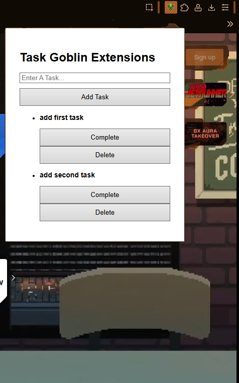

Update 9/12/26
No major development to report on this week apart from read and review of several browser's extension creation policies. Ex: Google Chrome's extension program policies https://developer.chrome.com/docs/webstore/program-policies/policies
Update 9/19/26
This week, added Task Goblin's (SIP) Brief page. This includes additional project
declaration in addition to the project's intended features and objective timeline.
Currently woking on objective 1.1 - building the extension's framework. Have already added
basic task creation to extension.
Forgot to add readme to project repository, so I plan to include that with more detailed dev notes
regarding changes. Expect to see that during next week's update. For now, here is proof of work.
